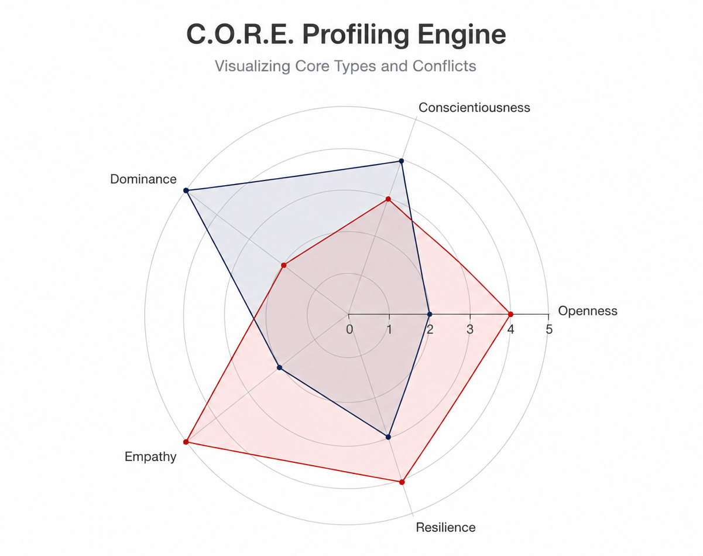

Find out what is really blocking you at work.
Most career tests only tell you what you want to hear. The C.O.R.E. Index precisely analyzes which unconscious hurdles are holding you back as a Agricultural Scientist — and delivers clear strategies.
- Based on the scientific Big Five model
- Takes about 8 minutes (70 data points)
- Results visible immediately, 100% anonymous

Why this test is different
We do not put you into colorful boxes. The C.O.R.E. Index works like a neutral mirror for your professional reality.
Scientific foundation
We use only the recognized Big Five model. It is the global standard in psychology for making reliable statements about human behavior.
Focus on the real hurdles
We do not only ask about your strengths. The test reveals how much fear of failure, need for security, or the urge for harmony unconsciously slow you down.
Clear action steps
At the end, you do not get vague life wisdom. You learn concretely whether you need to work on setting boundaries or whether only a job change will help.
Who this diagnostic was developed for
The test is aimed at specialists and managers in the Agriculture & Environment field who need real change in their day-to-day work.
The invisible high performers
You do the actual work and keep operations running. But when it comes to recognition, promotions, or salary increases, you are systematically overlooked.
The overburdened without boundaries
You feel responsible for everything, constantly step in for colleagues, and find it extremely hard to say "no." The result is deep exhaustion that builds up dangerously.
The frustrated in rigid systems
You have ideas and want to make things happen, but bureaucracy, endless meetings, or outdated structures hold you back until you resign yourself and do only the bare minimum.
The hesitant in the golden cage
You actually know that you need to change jobs or take a risk. But the fear of the unknown or the loss of comfort keeps you stuck where you are.
Frequently Asked Questions (FAQ)
Does the test really fit my exact profession?
Yes. The calculations adapt to the real conditions in the Agriculture & Environment field. The evaluation takes into account the typical conflicts and stresses you encounter every day as a Agricultural Scientist.
Is the result really free?
The basic result is completely free. You will see your core profile, your biggest blockage, and the most important first steps directly in the browser. After that, there is the entirely optional possibility of purchasing a detailed PDF report.
What makes the C.O.R.E. Index different from other tests?
Many tests on the internet are based on ideas that are over 100 years old (such as those of C.G. Jung) and receive little attention in modern science. We work with the Big Five model, do not assign color types, and instead measure real traits.
The core conflict: professional integrity in a system full of conflicting goals
Standard advice like "prioritize better" falls short here. As an agricultural scientist, you carry responsibility for yield, environmental impact, animal welfare, economic viability, and legal compliance at the same time — often under conditions that cannot be cleanly resolved. That is exactly what creates constant stress. Many stay in draining roles because they feel morally responsible for the consequences of their recommendations or because they are afraid of being professionally attacked and therefore avoid taking a clear position. The C.O.R.E. Index checks whether systemic contradictions are mainly blocking you, or whether perfectionism, conflict avoidance, and hidden existential fear are limiting your ability to act.
→ Start the evaluation for Agricultural Scientist free of charge now
Frequently Asked Questions (Agricultural Scientist)
Does the test also help me if I am stuck between consulting, research, and an authority role?
Yes. In the agricultural sector especially, strain often comes from role conflicts: scientific standards, political requirements, and operational reality pull in different directions. The evaluation shows whether your exhaustion comes primarily from these structural contradictions or whether inner patterns like exaggerated responsibility, poor boundaries, or fear of making the wrong decision are making things worse.
How long does the diagnostic take?
The survey includes about 70 data points and takes around 8 minutes.
Do I need to register?
No. The primary evaluation is completely anonymous and takes place directly here in the browser without creating a user account.
Calculating...
Your operational profile
The unconscious shadow
Executive action steps
Strategic resources
Based on your profile (focus: ), we recommend the following in-depth literature and tools:
Literature recommendation
Standard work on conflict resolution and setting boundaries in professional life.
Masterclass & Training
Excellent online course on confident salary and role negotiations.